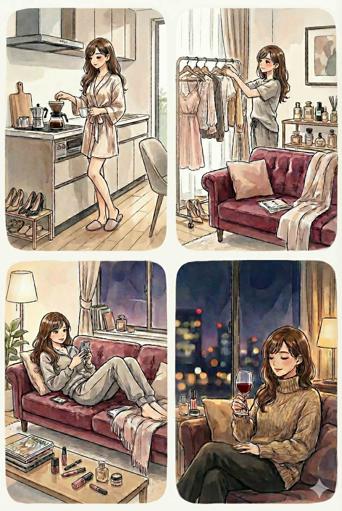
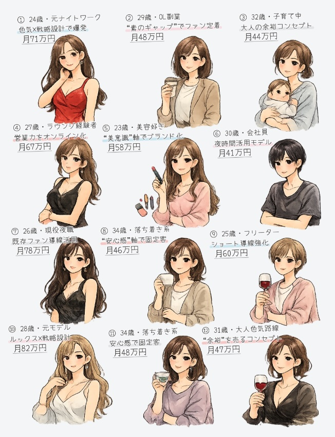

「何か特別なことをしなきゃいけないの？」
いいえ！過激なことや、無理な演技は一切不要です。

あなたが普段している「家事」や「リラックスタイム」を、スマホやカメラで撮るだけ！
例えるなら、「少しだけカメラを意識した日常」を過ごすだけです。
あとは私たちが魔法をかけて、あなた専用のファンクラブを作ります！
（週1回・約60分だけ！）
カメラを固定して、いつもの生活を「撮りっぱなし」にしてください。
🎬 例えばこんなシーンでOK！
・🍳 朝、キッチンでコーヒーを淹れる
・🧺 いつも通りに掃除や洗濯をする
・🛋️ ソファでゴロゴロしながらスマホを見る
・🌙 夜、お部屋の明かりを落としてくつろぐ
撮り終わったら、データを私たちに渡すだけでお仕事完了です✨
① 身バレ対策は“あなた基準”で決定 🔒
活動スタイルは事前カウンセリングで一緒に決めます。
・マスク着用
・口元のみ
・目元のみ
・完全AI変換🪄
・顔出しOKで最大収益狙い💰
あなたの許容範囲に合わせて設計します。無理に顔出しを強要することはありません。
② 個別のやり取りはナシ 🙅♀️
ファンと直接会うことはありません。個人的なDMのやり取りも禁止ルールとしています。やり取りはすべて運営チームが管理し、スマホの中で完結する仕組みを徹底。とにかく安心できる状態を守ります。
③ 面倒な作業は「ぜんぶ丸投げ」 🏢
動画編集・テロップ制作、SNS投稿、ファン対応やコメント管理は、すべてプロの運営チームが担当します。
さらに――
✔ 投稿時間の最適化
✔ アルゴリズム分析
✔ 導線設計
✔ 売れるコンテンツ構成
✔ 月次改善ミーティング
SNSマーケのプロが戦略から設計します。あなたは“生活をするだけ”。仕組みでファンを育てます✨
まずはカウンセリング。
✔ 活動できる時間
✔ 顔出しの可否
✔ 生活リズム
✔ 得意な雰囲気
✔ 無理のないペース
これらをヒアリングし、あなたに合った活動スタイルを一緒に決めます。
無理な顔出しも、過度な露出も、強要しません。
「続けられるかどうか」を最優先に設計します。
稼げる人には、必ず“軸”があります。
例えば…
・癒し系の丁寧な日常
・自然体の素朴なリアル
・落ち着いた大人の余裕
・元ナイトワークの色気
あなたの魅力を分析し、ファンが定着しやすいコンセプトに変換します。
感覚ではなく、戦略で設計します。
「続かない」が一番の失敗。
だからこそ、仕組みで支えます。
✔ 投稿テンプレート用意
✔ 撮影時間の固定化
✔ 無理のない頻度設定
✔ SNS投稿時間の最適化
✔ 導線設計
✔ 数字分析・改善
SNSマーケのプロが裏側を管理。
あなたは、日常を過ごして素材を撮るだけ。
ファンは一度つけば、毎月自動的に積み上がっていきます。
軌道に乗れば、
月20万円 / 月30万円 / 月50万円以上
“労働収入”ではなくストック型収入を目指します。
・身バレ対策はあなた基準
・直接接客なし
・生活優先
・無理をさせない
・長く続く設計
安心して取り組める環境を整えます。
運営チームがあなたのファンクラブを育てます。そこで生まれた収益は毎月あなたに継続的に還元されます💸
あなたの戦略・ライフスタイルに合わせて「ただ普段の生活をしているだけなのに、毎月数十万円のお小遣いが入ってくる」状態を作ることが可能です！
様々なライフスタイルに合わせて、無理なく収益化できている先輩たちがたくさんいます✨

現状はテスト段階のため、内容は柔軟に対応します。
一緒にあなたらしいファンビジネスを作っていきましょう！